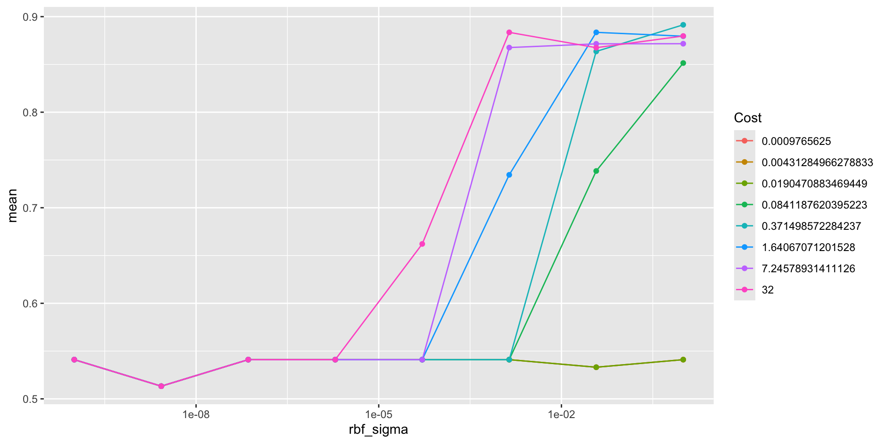
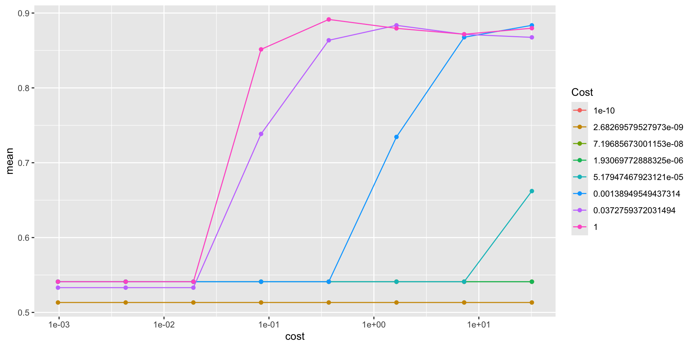

Support Vector Machines
November 11 + 13, 2024
Agenda 11/11/2024
- linearly separable
- dot products
- support vector formulation
tidymodels syntax
- partition the data
- build a recipe
- select a model
- create a workflow
- fit the model
- validate the model
Support Vector Machines
SVMs create both linear and non-linear decision boundaries. They are incredibly efficient because of the kernel trick which allows the computation to be done in a high dimension.
Deriving SVM formulation
\(\rightarrow\) see class notes for all technical details
Mathematics of the optimization to find the widest linear boundary in a space where the two groups are completely separable.
Note from derivation: both the optimization and the application are based on dot products.
Transform the data to a higher space so that the points are linearly separable. Perform SVM in that space.
Recognize that “performing SVM in higher space” is exactly equivalent to using a kernel in the original dimension.
Allow for points to cross the boundary using soft margins.
SVM applet
Shiny app which allows different linear classifiers: https://xzcai.shinyapps.io/SVM_app/
Agenda 11/13/24
- not linearly separable (SVM)
- kernels (SVM)
- support vector formulation
What if the boundary is wiggly?
If a wiggly boundary is really best, and the value of \(\gamma\) should be high to represent the high model complexity.

What if the boundary isn’t wiggly?
But if the boundary has low complexity, then the best value of \(\gamma\) is probably much lower.


Examples of kernels
linear \[K({\bf x}, {\bf y}) = {\bf x} \cdot{\bf y}\] Note, the only tuning parameter is the penalty/cost parameter \(C\)).
polynomial \[K_P({\bf x}, {\bf y}) =(\gamma {\bf x}\cdot {\bf y} + r)^d = \phi_P({\bf x}) \cdot \phi_P({\bf y}) \ \ \ \ \gamma > 0\] Note, here \(\gamma, r, d\) must be tuned using cross validation (along with the penalty/cost parameter \(C\)).
RBF \[K_{RBF}({\bf x}, {\bf y}) = e^{( - \gamma ||{\bf x} - {\bf y}||^2)} = \phi_{RBF}({\bf x}) \cdot \phi_{RBF}({\bf y})\] Note, here \(\gamma\) must be tuned using cross validation (along with the penalty/cost parameter \(C\)).
sigmoid1 \[K_S({\bf x}, {\bf y}) = \tanh(\gamma {\bf x}\cdot {\bf y} + r) = \phi_S({\bf x}) \cdot \phi_S({\bf y})\] Note, here \(\gamma, r\) must be tuned using cross validation (along with the penalty/cost parameter \(C\)). One benefit of the sigmoid kernel is that it has equivalence to a two-layer perceptron neural network.
Big \(C\) or small \(C\)?

Big \(C\) or small \(C\)?

Big \(C\) or small \(C\)?

Algorithm: Support Vector Machine
- Using cross validation, find values of \(C, \gamma, d, r\), etc. (and the kernel function!)
- Using Lagrange multipliers (read: the computer), solve for \(\alpha_i\) and \(b\).
- Classify an unknown observation (\({\bf u}\)) as “positive” if: \[\sum \alpha_i y_i \phi({\bf x}_i) \cdot \phi({\bf u}) + b = \sum \alpha_i y_i K({\bf x}_i, {\bf u}) + b \geq 0\]
SVM example w defaults
penguin_svm_recipe <-
recipe(sex ~ bill_length_mm + bill_depth_mm + flipper_length_mm +
body_mass_g, data = penguin_train) |>
step_normalize(all_predictors())
penguin_svm_recipe── Recipe ──────────────────────────────────────────────────────────────────────── Inputs Number of variables by roleoutcome: 1
predictor: 4── Operations • Centering and scaling for: all_predictors()penguin_svm_lin <- svm_linear() |>
set_engine("LiblineaR") |>
set_mode("classification")
penguin_svm_linLinear Support Vector Machine Model Specification (classification)
Computational engine: LiblineaR penguin_svm_lin_wflow <- workflow() |>
add_model(penguin_svm_lin) |>
add_recipe(penguin_svm_recipe)
penguin_svm_lin_wflow══ Workflow ════════════════════════════════════════════════════════════════════
Preprocessor: Recipe
Model: svm_linear()
── Preprocessor ────────────────────────────────────────────────────────────────
1 Recipe Step
• step_normalize()
── Model ───────────────────────────────────────────────────────────────────────
Linear Support Vector Machine Model Specification (classification)
Computational engine: LiblineaR penguin_svm_lin_fit <-
penguin_svm_lin_wflow |>
fit(data = penguin_train)
penguin_svm_lin_fit ══ Workflow [trained] ══════════════════════════════════════════════════════════
Preprocessor: Recipe
Model: svm_linear()
── Preprocessor ────────────────────────────────────────────────────────────────
1 Recipe Step
• step_normalize()
── Model ───────────────────────────────────────────────────────────────────────
$TypeDetail
[1] "L2-regularized L2-loss support vector classification dual (L2R_L2LOSS_SVC_DUAL)"
$Type
[1] 1
$W
bill_length_mm bill_depth_mm flipper_length_mm body_mass_g Bias
[1,] 0.248908 1.080195 -0.2256375 1.328448 0.06992734
$Bias
[1] 1
$ClassNames
[1] male female
Levels: female male
$NbClass
[1] 2
attr(,"class")
[1] "LiblineaR"Fit again
══ Workflow [trained] ══════════════════════════════════════════════════════════
Preprocessor: Recipe
Model: svm_linear()
── Preprocessor ────────────────────────────────────────────────────────────────
1 Recipe Step
• step_normalize()
── Model ───────────────────────────────────────────────────────────────────────
$TypeDetail
[1] "L2-regularized L2-loss support vector classification dual (L2R_L2LOSS_SVC_DUAL)"
$Type
[1] 1
$W
bill_length_mm bill_depth_mm flipper_length_mm body_mass_g Bias
[1,] 0.248908 1.080195 -0.2256375 1.328448 0.06992734
$Bias
[1] 1
$ClassNames
[1] male female
Levels: female male
$NbClass
[1] 2
attr(,"class")
[1] "LiblineaR"SVM example w CV tuning (RBF kernel)
penguin_svm_recipe <-
recipe(sex ~ bill_length_mm + bill_depth_mm + flipper_length_mm +
body_mass_g, data = penguin_train) |>
step_normalize(all_predictors())
penguin_svm_recipe── Recipe ──────────────────────────────────────────────────────────────────────── Inputs Number of variables by roleoutcome: 1
predictor: 4── Operations • Centering and scaling for: all_predictors()penguin_svm_rbf <- svm_rbf(cost = tune(),
rbf_sigma = tune()) |>
set_engine("kernlab") |>
set_mode("classification")
penguin_svm_rbfRadial Basis Function Support Vector Machine Model Specification (classification)
Main Arguments:
cost = tune()
rbf_sigma = tune()
Computational engine: kernlab penguin_svm_rbf_wflow <- workflow() |>
add_model(penguin_svm_rbf) |>
add_recipe(penguin_svm_recipe)
penguin_svm_rbf_wflow══ Workflow ════════════════════════════════════════════════════════════════════
Preprocessor: Recipe
Model: svm_rbf()
── Preprocessor ────────────────────────────────────────────────────────────────
1 Recipe Step
• step_normalize()
── Model ───────────────────────────────────────────────────────────────────────
Radial Basis Function Support Vector Machine Model Specification (classification)
Main Arguments:
cost = tune()
rbf_sigma = tune()
Computational engine: kernlab set.seed(234)
penguin_folds <- vfold_cv(penguin_train,
v = 4)# the tuned parameters also have default values you can use
penguin_grid <- grid_regular(cost(),
rbf_sigma(),
levels = 8)
penguin_grid# A tibble: 64 × 2
cost rbf_sigma
<dbl> <dbl>
1 0.000977 0.0000000001
2 0.00431 0.0000000001
3 0.0190 0.0000000001
4 0.0841 0.0000000001
5 0.371 0.0000000001
6 1.64 0.0000000001
7 7.25 0.0000000001
8 32 0.0000000001
9 0.000977 0.00000000268
10 0.00431 0.00000000268
# ℹ 54 more rows# this takes a few minutes
penguin_svm_rbf_tune <-
penguin_svm_rbf_wflow |>
tune_grid(resamples = penguin_folds,
grid = penguin_grid)
penguin_svm_rbf_tune # Tuning results
# 4-fold cross-validation
# A tibble: 4 × 4
splits id .metrics .notes
<list> <chr> <list> <list>
1 <split [186/63]> Fold1 <tibble [192 × 6]> <tibble [0 × 3]>
2 <split [187/62]> Fold2 <tibble [192 × 6]> <tibble [0 × 3]>
3 <split [187/62]> Fold3 <tibble [192 × 6]> <tibble [0 × 3]>
4 <split [187/62]> Fold4 <tibble [192 × 6]> <tibble [0 × 3]>SVM model output
penguin_svm_rbf_tune |>
collect_metrics() |>
filter(.metric == "accuracy") |>
ggplot() +
geom_line(aes(color = as.factor(cost), y = mean, x = rbf_sigma)) +
geom_point(aes(color = as.factor(cost), y = mean, x = rbf_sigma)) +
labs(color = "Cost") +
scale_x_continuous(trans='log10')
SVM model output - take two
penguin_svm_rbf_tune |>
collect_metrics() |>
filter(.metric == "accuracy") |>
ggplot() +
geom_line(aes(color = as.factor(rbf_sigma), y = mean, x = cost)) +
geom_point(aes(color = as.factor(rbf_sigma), y = mean, x = cost)) +
labs(color = "Cost") +
scale_x_continuous(trans='log10')
SVM model output - best CV parameters
penguin_svm_rbf_tune |>
collect_metrics() |>
filter(.metric == "accuracy") |>
arrange(desc(mean))# A tibble: 64 × 8
cost rbf_sigma .metric .estimator mean n std_err .config
<dbl> <dbl> <chr> <chr> <dbl> <int> <dbl> <chr>
1 0.371 1 accuracy binary 0.891 4 0.0123 Preprocessor1_Model…
2 32 0.00139 accuracy binary 0.884 4 0.00747 Preprocessor1_Model…
3 1.64 0.0373 accuracy binary 0.884 4 0.00747 Preprocessor1_Model…
4 32 1 accuracy binary 0.880 4 0.0207 Preprocessor1_Model…
5 1.64 1 accuracy binary 0.880 4 0.00791 Preprocessor1_Model…
6 7.25 1 accuracy binary 0.872 4 0.0168 Preprocessor1_Model…
7 7.25 0.0373 accuracy binary 0.872 4 0.0145 Preprocessor1_Model…
8 7.25 0.00139 accuracy binary 0.868 4 0.0329 Preprocessor1_Model…
9 32 0.0373 accuracy binary 0.868 4 0.0136 Preprocessor1_Model…
10 0.371 0.0373 accuracy binary 0.864 4 0.0295 Preprocessor1_Model…
# ℹ 54 more rowsSVM Final model – using CV params
penguin_svm_rbf_opt <- svm_rbf(cost = 0.3715,
rbf_sigma = 1) |>
set_engine("kernlab") |>
set_mode("classification")
penguin_svm_rbf_optRadial Basis Function Support Vector Machine Model Specification (classification)
Main Arguments:
cost = 0.3715
rbf_sigma = 1
Computational engine: kernlab penguin_svm_rbf_final_opt <-
workflow() |>
add_model(penguin_svm_rbf_opt) |>
add_recipe(penguin_svm_recipe) |>
fit(data = penguin_train)SVM Final model – using finalize_model()
penguin_svm_rbf_best <- finalize_model(
penguin_svm_rbf,
select_best(penguin_svm_rbf_tune, metric = "accuracy"))
penguin_svm_rbf_bestRadial Basis Function Support Vector Machine Model Specification (classification)
Main Arguments:
cost = 0.371498572284237
rbf_sigma = 1
Computational engine: kernlab penguin_svm_rbf_final_best <-
workflow() |>
add_model(penguin_svm_rbf_best) |>
add_recipe(penguin_svm_recipe) |>
fit(data = penguin_train)SVM Final model
Note that pluggint in the parameter values from cross validating or using the finalize_model() function give you the same results.
penguin_svm_rbf_final_opt══ Workflow [trained] ══════════════════════════════════════════════════════════
Preprocessor: Recipe
Model: svm_rbf()
── Preprocessor ────────────────────────────────────────────────────────────────
1 Recipe Step
• step_normalize()
── Model ───────────────────────────────────────────────────────────────────────
Support Vector Machine object of class "ksvm"
SV type: C-svc (classification)
parameter : cost C = 0.3715
Gaussian Radial Basis kernel function.
Hyperparameter : sigma = 1
Number of Support Vectors : 137
Objective Function Value : -31.8005
Training error : 0.052209
Probability model included. penguin_svm_rbf_final_best══ Workflow [trained] ══════════════════════════════════════════════════════════
Preprocessor: Recipe
Model: svm_rbf()
── Preprocessor ────────────────────────────────────────────────────────────────
1 Recipe Step
• step_normalize()
── Model ───────────────────────────────────────────────────────────────────────
Support Vector Machine object of class "ksvm"
SV type: C-svc (classification)
parameter : cost C = 0.371498572284237
Gaussian Radial Basis kernel function.
Hyperparameter : sigma = 1
Number of Support Vectors : 137
Objective Function Value : -31.8005
Training error : 0.052209
Probability model included. Test predictions
penguin_svm_rbf_final_opt |>
predict(new_data = penguin_test) |>
cbind(penguin_test) |>
select(sex, .pred_class) |>
table() .pred_class
sex female male
female 39 5
male 4 36penguin_svm_rbf_final_opt |>
predict(new_data = penguin_test) |>
cbind(penguin_test) |>
conf_mat(sex, .pred_class) Truth
Prediction female male
female 39 4
male 5 36Other measures
# https://yardstick.tidymodels.org/articles/metric-types.html
class_metrics <- metric_set(accuracy, sensitivity,
specificity, f_meas)
penguin_svm_rbf_final_opt |>
predict(new_data = penguin_test) |>
cbind(penguin_test) |>
class_metrics(truth = sex, estimate = .pred_class)# A tibble: 4 × 3
.metric .estimator .estimate
<chr> <chr> <dbl>
1 accuracy binary 0.893
2 sensitivity binary 0.886
3 specificity binary 0.9
4 f_meas binary 0.897Bias-Variance Tradeoff

Reflecting on Model Building

Reflecting on Model Building

Reflecting on Model Building